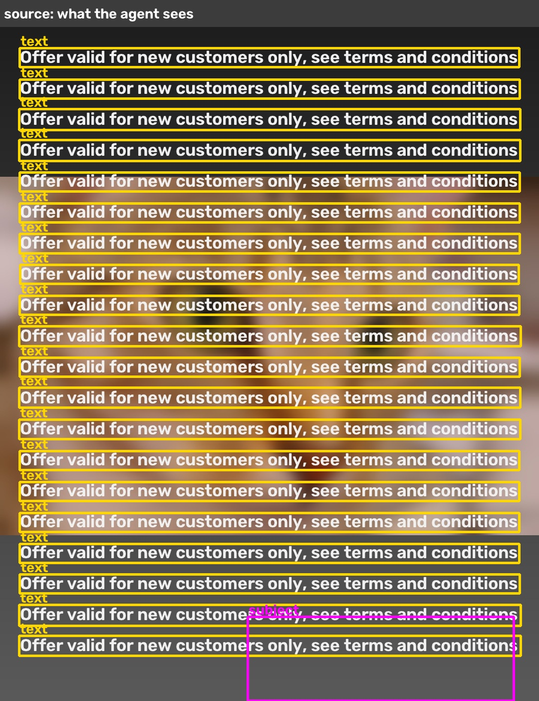
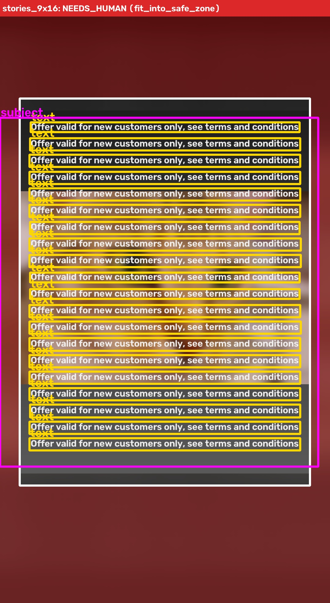
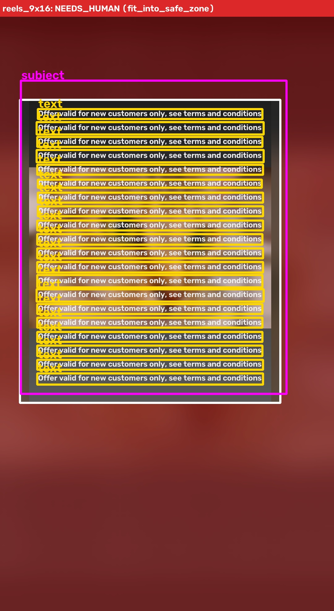
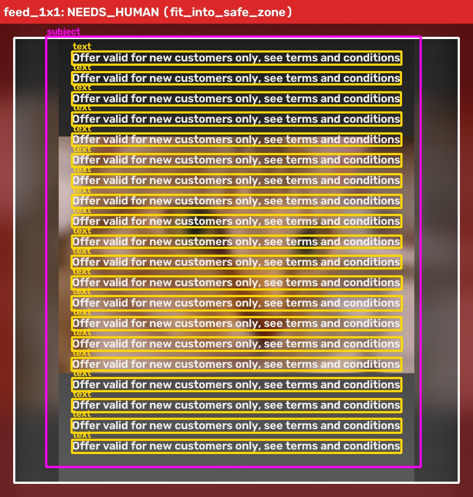
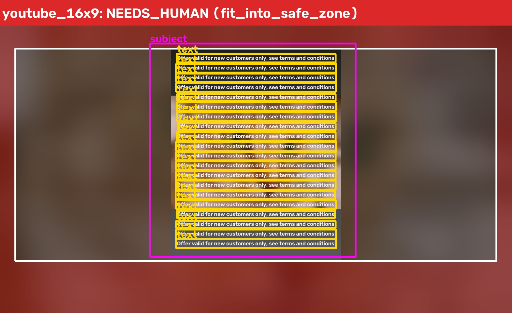
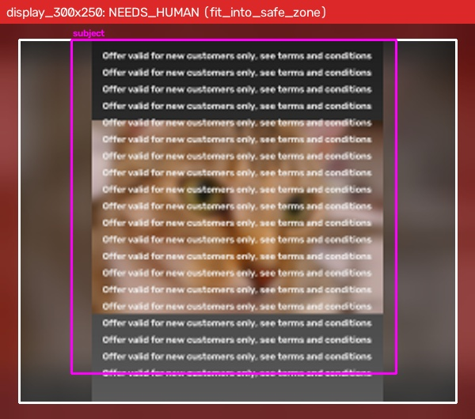

Needs human approval: YES · planner: rules · runtime 2.0s
Source: 1080x1350 · fixes applied: none · source escalation: cannot fix automatically: logo_missing, text_heavy
sharpness None → None · brightness 110.8 → 110.8 · text covers 54% · faces 0 · logo found: False


final tool: fit_into_safe_zone · agent steps: 3
remaining issues: none
why human: source: cannot fix automatically: logo_missing, text_heavy

final tool: fit_into_safe_zone · agent steps: 3
remaining issues: none
why human: source: cannot fix automatically: logo_missing, text_heavy

final tool: fit_into_safe_zone · agent steps: 3
remaining issues: none
why human: source: cannot fix automatically: logo_missing, text_heavy

final tool: fit_into_safe_zone · agent steps: 3
remaining issues: none
why human: source: cannot fix automatically: logo_missing, text_heavy

final tool: fit_into_safe_zone · agent steps: 3
remaining issues: text_too_small
why human: source: cannot fix automatically: logo_missing, text_heavy
placement: text_too_small
| # | stage | observed issues | decision | result |
|---|---|---|---|---|
| 1 | source | text_heavy, logo_missing | escalate {} cannot fix automatically: logo_missing, text_heavy | escalated to human |
| 2 | stories_9x16 | aspect_mismatch | smart_crop {"strategy": "all"} aspect differs: crop around faces, logo, text and subject | new issues: text_cut, text_in_ui_zone |
| 3 | stories_9x16 | text_cut, text_in_ui_zone | smart_crop {"strategy": "priority"} full crop failed: keep faces and logo first, let text/subject edges go | new issues: text_cut, text_in_ui_zone |
| 4 | stories_9x16 | text_cut, text_in_ui_zone | fit_into_safe_zone {} crops cannot keep it all in the safe zone: shrink into the safe zone on a blurred backdrop | new issues: none |
| 5 | stories_9x16 | none | accept {} candidate passes every placement check | accepted |
| 6 | reels_9x16 | aspect_mismatch | smart_crop {"strategy": "all"} aspect differs: crop around faces, logo, text and subject | new issues: text_cut, text_in_ui_zone |
| 7 | reels_9x16 | text_cut, text_in_ui_zone | smart_crop {"strategy": "priority"} full crop failed: keep faces and logo first, let text/subject edges go | new issues: text_cut, text_in_ui_zone |
| 8 | reels_9x16 | text_cut, text_in_ui_zone | fit_into_safe_zone {} crops cannot keep it all in the safe zone: shrink into the safe zone on a blurred backdrop | new issues: none |
| 9 | reels_9x16 | none | accept {} candidate passes every placement check | accepted |
| 10 | feed_1x1 | aspect_mismatch | smart_crop {"strategy": "all"} aspect differs: crop around faces, logo, text and subject | new issues: text_cut, text_in_ui_zone, subject_cut |
| 11 | feed_1x1 | text_cut, text_in_ui_zone, subject_cut | smart_crop {"strategy": "priority"} full crop failed: keep faces and logo first, let text/subject edges go | new issues: text_cut, text_in_ui_zone, subject_cut |
| 12 | feed_1x1 | text_cut, text_in_ui_zone, subject_cut | fit_into_safe_zone {} crops cannot keep it all in the safe zone: shrink into the safe zone on a blurred backdrop | new issues: none |
| 13 | feed_1x1 | none | accept {} candidate passes every placement check | accepted |
| 14 | youtube_16x9 | aspect_mismatch | smart_crop {"strategy": "all"} aspect differs: crop around faces, logo, text and subject | new issues: text_cut, text_in_ui_zone, subject_cut |
| 15 | youtube_16x9 | text_cut, text_in_ui_zone, subject_cut | smart_crop {"strategy": "priority"} full crop failed: keep faces and logo first, let text/subject edges go | new issues: text_cut, text_in_ui_zone, subject_cut |
| 16 | youtube_16x9 | text_cut, text_in_ui_zone, subject_cut | fit_into_safe_zone {} crops cannot keep it all in the safe zone: shrink into the safe zone on a blurred backdrop | new issues: none |
| 17 | youtube_16x9 | none | accept {} candidate passes every placement check | accepted |
| 18 | display_300x250 | aspect_mismatch | smart_crop {"strategy": "all"} aspect differs: crop around faces, logo, text and subject | new issues: text_cut, text_in_ui_zone, subject_cut |
| 19 | display_300x250 | text_cut, text_in_ui_zone, subject_cut | smart_crop {"strategy": "priority"} full crop failed: keep faces and logo first, let text/subject edges go | new issues: text_cut, text_in_ui_zone, subject_cut |
| 20 | display_300x250 | text_cut, text_in_ui_zone, subject_cut | fit_into_safe_zone {} crops cannot keep it all in the safe zone: shrink into the safe zone on a blurred backdrop | new issues: text_too_small |
| 21 | display_300x250 | text_too_small | escalate {} no tool left that fixes: text_too_small | escalated to human |